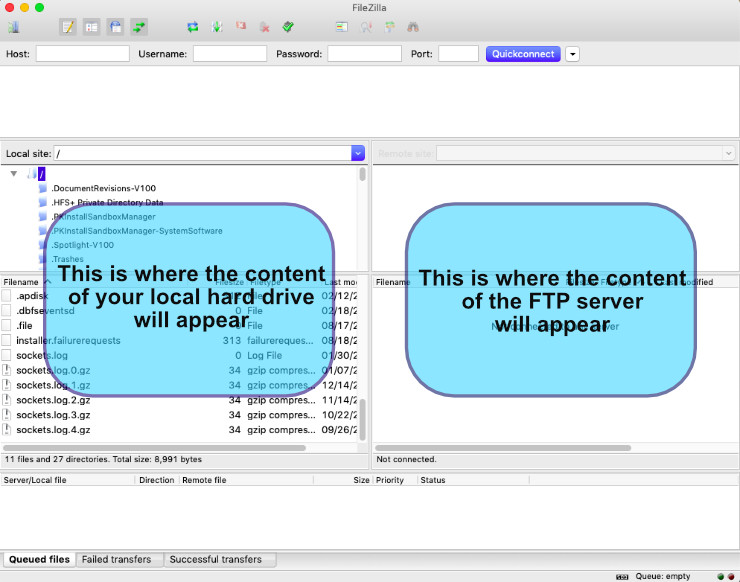

Life is Strange art exchange [closed]
As a part of the #WeAreLiS initiative on Twitter we are organising the art exchange between Life is Strange fans. The exchange allows fans from around the world to share their collections of fan art and see collections prepared by others. The exchange started on Wednesday, 20th February 2019 and will last for approximately three weeks. The end of the exchange will be announced in advance. If you have already enrolled in the exchange, below you will find an easy step by step guide on how to upload your collection and download collections of other fans. If you haven’t enrolled in the exchange yet, read the original post about the exchange and then contact me so you can be added to the list of participants.
Update: The art exchange has been already concluded. Huge thanks to all the participants for sharing your awesome collections of Life is Strange drawings and illustrations with other fans. There might be another edition in the future, but I have no immediate plans for that.
Art exchange status: closed
FTP server status: offline
Art exchange deadline: 2019-07-08
Before you start
Please make sure you’ve looked through your collection and placed all the images containing adult content into a separate folder called NSFW.
Please make sure you’ve read the three basic rules of the exchange at the very bottom of this article.
Feel free to contact me if you have any questions or encounter any difficulties or technical problems.
How does the exchange work?
Life is Strange art exchange takes places on a special FTP server. An FTP server is a dedicated place on the internet where various users can exchange files using a software called an FTP client. The FTP server for this exchange is private and secured, meaning that only fans participating in the art exchange have access to the files on the server.
To connect to the FTP server you will need two things:
- An FTP client (FileZilla is a great free one that works on Windows, Linux and macOS)
- Server address, your username and password.
Server address, username and password are given to each participant via DM on Twitter. Do NOT share them with anyone!
There is one change from the original concept of the exchange: there will be no strict schedule for uploads, so any fan taking part in the exchange can upload their collection at any time they see fit and anyone can download others’ collection whenever they want to. However, I highly encourage you to share the news about uploading your collection with other fans via Twitter, so they know to check the FTP server for any new content. All collections will remain on the server for the whole duration of the Life is Strange art exchange.
Setting up the FTP client
Instruction below refers to FileZilla, but you can use any other FTP client. Usually their configuration is very similar, so you shouldn’t have any problem with connecting to the server no matter what software you use
- Download and install FileZilla (installation instructions)
- Open the programme. In the upper part of FileZilla’s window you’ll see a quick connection fields:

- Type server details received via DM on Twitter into their respective fields and then click Quickconnect. (FileZilla tutorial)
- A dialog warning about the unknown certificate might appear, including the information that “Hostname does not match the certificate”. That is completely normal and it does not affect the security of your connection. To prevent this message from being displayed again check the box Always trust certificate in future sessions and click OK.
- After a few seconds in the right part of FileZilla’s window (Remote site) a list of folders should appear. Congratulations! You’ve just connected to the art exchange server!

Downloading others’ collections
Each folder on the FTP server represents a collection of a single participant. You can right-click on any folder and choose Download (click with the ctrl key pressed to select multiple folders at once). FileZilla will automatically begin downloading selected folder(s) to the location you set up in the left part of the window (Local site). Depending on the size of a folder and the speed of your internet connection this process may take a while.
REMEMBER: never delete or remove others’ folders from the FTP server! You can only copy their content to your local computer, do NOT cut and paste it!
Uploading your own collection
On the right side of FileZilla window, find the folder on the FTP server with your username or pseudonym and open it (make sure you are looking inside your folder on the FTP server, not at the level above it). On the left side select folder(s) you want to upload, then right-click on them and choose Upload. Depending on the size of a folder and the speed of your internet connection this process may take a while.
Tips and tricks
- Connect to the server from time to time during the exchange (i.e. every other day) to check whether new collections have been uploaded or the existing ones updated with additional content. You can check the modification date of every folder to quickly find the ones that have been changed since your last visit to the server.
- At the end of upload/download operation look at the bottom part of FileZilla window and check the tab called Failed transfers. If there were any errors that caused interruptions during the transfer, you will see there which files were not copied.
- If your internet connection is slow or unstable, try to transfer one folder at a time.
- Always double-check if you are uploading your collection to the correct folder, so it won’t get mixed with others’ files.
Original post about the exchange
To All of You, Life is Strange fans: we’re preparing an art exchange which will allow you to expand your collection of LIS pictures and fanart, as well as share your collection with others. If you’re interested in the idea DM me so I can add you to the list.
Most of us keep a folder with our favourite LIS fanart and images. Let’s exchange our collections by sharing them online, allowing other fans to discover amazing pictures we found on the Internet. Maybe those pictures will inspire someone to create their own art, or write a fan fiction, or just make them smile on a bad day?
Everyone participating in the exchange will get login information and easy instructions allowing them to connect to a dedicated FTP server where they can upload their collection of pictures as well as download collections uploaded by the others.
It doesn’t matter how many pictures you have in your collection, even with a dozen pictures you can still take part in the exchange. To join the exchange simply DM me and let me know about the total size of your collection (in MB or GB) so I can asses server resources needed for the whole operation.
There are some rules to ensure the exchange goes well for everyone:
-
We only share pictures already publicly available on the internet. If you received some special fanart from the creator (i.e. via Patreon, Ko-Fi, etc.) please do NOT include it in the exchange unless the artist explicitly consented to that. We all want to support awesome creators and freely sharing their paid artwork would not be fair! Instead tweet the link to their Patreon account or encourage friends to commission the artists.
-
We share art only for private, personal use. Do not repost others’ artworks elsewhere without their permission and always remember to credit the artist and provide a link to their original content.
-
Any adult content must be placed into a separate folder, clearly marked as NSFW.